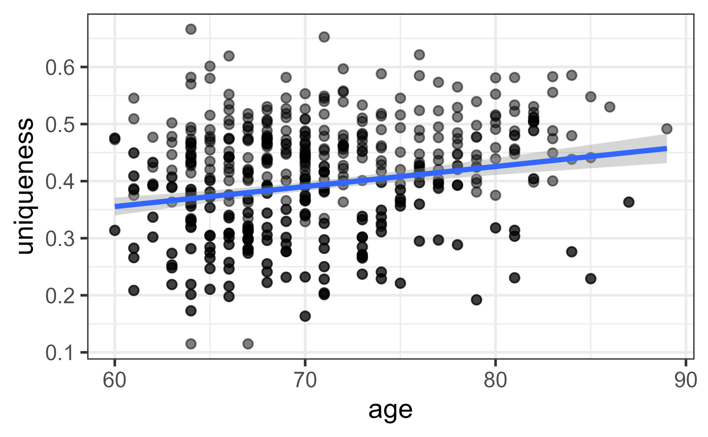
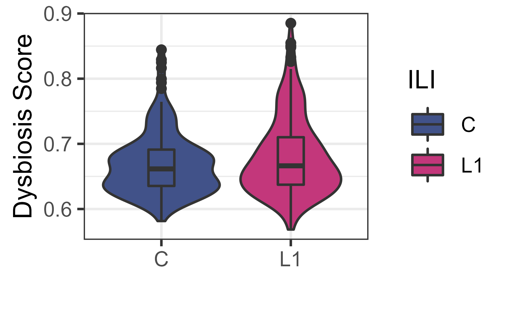

biomeUtils is part of the RIVM-ToolBox project aimed at
providing standard set of tools that interact with open tools for a wide
array of data analytics, including microbiomics. The RIVM-ToolBox is a
set of individual R tools focused towards different
goals/functionalities.
biomeUtils : Data handling
Outputs for standard data generating pipelines/workflows.
biomeStats: Data analytics
Common data analytics including basic statistics.
biomeViz: Data visualization
Data visualization of different data types.
devtools::install_github("RIVM-IIV-Microbiome/biomeUtils")
library(biomeUtils)
#> Loading required package: phyloseq
#> Loading required package: microbiome
#> Loading required package: ggplot2
#>
#> microbiome R package (microbiome.github.com)
#>
#>
#>
#> Copyright (C) 2011-2022 Leo Lahti,
#> Sudarshan Shetty et al. <microbiome.github.io>
#>
#> Attaching package: 'microbiome'
#> The following object is masked from 'package:ggplot2':
#>
#> alpha
#> The following object is masked from 'package:base':
#>
#> transform
data("FuentesIliGutData")
FuentesIliGutData
#> phyloseq-class experiment-level object
#> otu_table() OTU Table: [ 905 taxa and 589 samples ]
#> sample_data() Sample Data: [ 589 samples by 61 sample variables ]
#> tax_table() Taxonomy Table: [ 905 taxa by 7 taxonomic ranks ]
#> phy_tree() Phylogenetic Tree: [ 905 tips and 904 internal nodes ]
data("FuentesIliGutData")
# get otu table in tibble format
otu_tib <- getAbundanceTibble(FuentesIliGutData,
select_rows = c("ASV302", "ASV82", "ASV410", "ASV2332"),
select_cols = c("sample_1", "sample_5", "sample_6"),
column_id = "FeatureID")
# get taxa table in tibble format
tax_tib <- getTaxaTibble(FuentesIliGutData,
select_rows = c("ASV302", "ASV82", "ASV410", "ASV2332"),
select_cols = c("Phylum", "Genus"),
column_id = "FeatureID")
# get sample data in tibble format
meta_tib <- getSampleTibble(FuentesIliGutData,
select_rows = c("sample_1", "sample_5", "sample_6"),
select_cols = c("participant_id", "ILI", "age"),
column_id = "FeatureID")
# Filter by phyloseq like subset_*
ps.filtered.samples <- filterSampleData(FuentesIliGutData,
ILI == "C" & BMI < 26)
ps.filtered.samples
#> phyloseq-class experiment-level object
#> otu_table() OTU Table: [ 901 taxa and 91 samples ]
#> sample_data() Sample Data: [ 91 samples by 61 sample variables ]
#> tax_table() Taxonomy Table: [ 901 taxa by 7 taxonomic ranks ]
#> phy_tree() Phylogenetic Tree: [ 901 tips and 900 internal nodes ]
ps.filtered.taxa <- filterTaxaData(FuentesIliGutData,
Phylum=="Firmicutes")
ps.filtered.taxa
#> phyloseq-class experiment-level object
#> otu_table() OTU Table: [ 758 taxa and 589 samples ]
#> sample_data() Sample Data: [ 589 samples by 61 sample variables ]
#> tax_table() Taxonomy Table: [ 758 taxa by 7 taxonomic ranks ]
#> phy_tree() Phylogenetic Tree: [ 758 tips and 757 internal nodes ]
# Filter by names like prune_*
sams.select <- sample_names(FuentesIliGutData)[1:10]
ps.filter.by.sam.names <- filterSampleByNames(FuentesIliGutData,
ids = sams.select,
keep = TRUE)
tax.select <- taxa_names(FuentesIliGutData)[1:10]
ps.filter.by.tax.names <- filterTaxaByNames(FuentesIliGutData,
ids = tax.select,
keep = TRUE)Check for polyphyletic taxa in tax_table. Useful to
check this before aggregating at any level. Here, for
e.g. Eubacterium is is in both Lachnospiraceae and
EUbacteriaceae family.
library(biomeUtils)
library(dplyr)
#>
#> Attaching package: 'dplyr'
#> The following objects are masked from 'package:stats':
#>
#> filter, lag
#> The following objects are masked from 'package:base':
#>
#> intersect, setdiff, setequal, union
data("FuentesIliGutData")
polydf <- checkPolyphyletic(FuentesIliGutData,
taxa_level = "Genus",
return_df = TRUE)
polydf
#> # A tibble: 6 × 7
#> # Groups: Genus [3]
#> Domain Phylum Class Order Family Genus nfeatures
#> <chr> <chr> <chr> <chr> <chr> <chr> <int>
#> 1 Bacteria Firmicutes Clostridia Clostridiales Lachnospiraceae Eubact… 2
#> 2 Bacteria Firmicutes Clostridia Clostridiales Lachnospiraceae Clostr… 2
#> 3 Bacteria Firmicutes Clostridia Clostridiales Lachnospiraceae Rumino… 2
#> 4 Bacteria Firmicutes Clostridia Clostridiales Ruminococcaceae Rumino… 2
#> 5 Bacteria Firmicutes Clostridia Clostridiales Eubacteriaceae Eubact… 2
#> 6 Bacteria Firmicutes Clostridia Clostridiales Ruminococcaceae Clostr… 2
library(biomeUtils)
data("FuentesIliGutData")
ps1 <- filterSampleData(FuentesIliGutData, ILI == "C")
ps2 <- filterSampleData(FuentesIliGutData, ILI == "L1")
ps3 <- filterSampleData(FuentesIliGutData, ILI == "L2")
ps.list <- c("C" = ps1, "L1" = ps2, "L2" = ps3)
comparePhyloseq(ps.list)
#> input ntaxa nsample min.reads max.reads total.read average.reads singletons
#> 1 C 901 184 10975 143946 7658743 41623.60 0
#> 2 L1 902 213 12715 140779 8568244 40226.50 0
#> 3 L2 896 192 24868 194135 15127300 78788.02 0
#> sparsity
#> 1 0.6717355
#> 2 0.6678794
#> 3 0.6372652
library(biomeUtils)
data("FuentesIliGutData")
# reduce size for example
ps1 <- filterSampleData(FuentesIliGutData, ILI == "C")
meta_tib <- calculatePD(ps1, justDF=TRUE)
# check
meta_tib[c(1,2,3),c("PD", "SR")]
data("FuentesIliGutData")
prev_tib <- getPrevalence(FuentesIliGutData,
return_rank= c("Family", "Genus"),
return_taxa = c("ASV4", "ASV17" , "ASV85", "ASV83"),
sort=TRUE)
head(prev_tib)
#> Taxa prevalence Family Genus
#> 1 ASV4 0.9881154 Lachnospiraceae Blautia
#> 2 ASV17 0.9847199 Streptococcaceae Streptococcus
#> 3 ASV85 0.7758913 Lachnospiraceae Roseburia
#> 4 ASV83 0.7045840 Bacteroidaceae BacteroidesExtracts the minimum value from a matrix for each individual. This is the dissimilarity of an individual from their nearest neighbor. Here, the option of using a one or more reference samples is provided. see the man page. The original article (cite when using this) did all versus all samples dissimilarities. Wilmanski T, et al., (2021) Gut microbiome pattern reflects healthy ageing and predicts survival in humans. Nature metabolism
library(biomeUtils)
data("FuentesIliGutData")
ps <- getProportions(FuentesIliGutData)
dist.mat <- phyloseq::distance(ps, "bray")
muniq <- uniqueness(ps,
dist_mat=dist.mat,
reference_samples = NULL)
#head(muniq)
ggplot(muniq,aes(age,uniqueness)) +
geom_point(alpha=0.5) +
geom_smooth(method = "lm") +
theme_bw()
#> `geom_smooth()` using formula 'y ~ x'
Dysbiosis score or index are often used to identify the extent to
which clinically classified diseased samples are different from non
diseased reference samples. There are several approaches, large-scale
bacterial marker profiling, relevant taxon-based methods, neighborhood
classification, random forest prediction, and combined alpha-beta
diversity reviewed by Wei et al
2021. Here we provide two scores based on neighborhood
classification. see ?dysbiosisScore for more information on
the two methods.
See also Brüssow
H. Problems with the concept of gut microbiota dysbiosis. Microbial
biotechnology. (2020).
library(biomeUtils)
data("FuentesIliGutData")
# Keep only two groups. controls and L1.
ps <- filterSampleData(FuentesIliGutData, ILI != "L2")
ps <- getProportions(ps)
# Define controls as reference samples
ref_samples <- rownames(meta(subset_samples(ps, ILI == "C")))
# Median Bray-Curtis dissimilarity method
dys_bc <- dysbiosisScore(ps,
reference_samples = ref_samples,
method="median-BC")Visualize the score in ILI (L1) and Control group.
dys_bc |>
ggplot(aes(ILI, dysbiosis.socre)) +
geom_violin() +
geom_boxplot(width=0.2) +
theme_bw() +
labs(x="", y="Dysbiosis Score")
library(biomeUtils)
data("FuentesIliGutData")
# Keep only two groups
ps1 <- filterSampleData(FuentesIliGutData, ILI != "L2")
taxa_fd <- calculateTaxaFoldDifference(ps1, group="ILI")
#> Joining, by = c("Taxa", "Domain", "Phylum", "Class", "Order", "Family",
#> "Genus", "Species")
# check
head(taxa_fd)
#> FeatureID Domain Phylum Class Order Family
#> 1 ASV302 Bacteria Firmicutes Clostridia Clostridiales Lachnospiraceae
#> 2 ASV636 Bacteria Firmicutes Clostridia Clostridiales Ruminococcaceae
#> 3 ASV500 Bacteria Firmicutes Clostridia Clostridiales Ruminococcaceae
#> 4 ASV7 Bacteria Firmicutes Clostridia Clostridiales Lachnospiraceae
#> 5 ASV2617 Bacteria Firmicutes Clostridia Clostridiales Ruminococcaceae
#> 6 ASV148 Bacteria Firmicutes Clostridia Clostridiales Ruminococcaceae
#> Genus Species FoldDifference Prevalence.C
#> 1 Lachnospiraceae NC2004 group <NA> -0.167551359 0.8478261
#> 2 Ruminococcaceae UCG-013 <NA> -0.100108612 0.2228261
#> 3 <NA> <NA> 0.157777020 0.2989130
#> 4 Fusicatenibacter saccharivorans -0.124023091 0.9945652
#> 5 <NA> <NA> -0.068360663 0.2336957
#> 6 <NA> <NA> -0.002698838 0.3206522
#> Prevalence.L1 Enriched
#> 1 0.8309859 C
#> 2 0.1830986 C
#> 3 0.4178404 L1
#> 4 0.9624413 C
#> 5 0.1784038 C
#> 6 0.3192488 C
library(biomeUtils)
data("FuentesIliGutData")
ps <- filterSampleData(FuentesIliGutData, ILI != "L2")
ps <- phyloseq::rarefy_even_depth(ps)
#> You set `rngseed` to FALSE. Make sure you've set & recorded
#> the random seed of your session for reproducibility.
#> See `?set.seed`
#> ...
dist.mat <- phyloseq::distance(ps, "bray")
dist.melt.sample <- meltDistanceToTable(ps,
dist_mat = dist.mat,
name_dist_column = "Bray-Curtis",
select_cols = c("participant_id", "ILI"))
head(dist.melt.sample)
#> S1 S2 Bray.Curtis participant_id_S1 ILI_S1 participant_id_S2
#> 1 sample_2 sample_1 0.5611845 ELD2 C ELD1
#> 2 sample_3 sample_1 0.5809567 ELD3 C ELD1
#> 3 sample_4 sample_1 0.5461503 ELD4 C ELD1
#> 4 sample_5 sample_1 0.6389977 ELD5 L1 ELD1
#> 5 sample_6 sample_1 0.7315718 ELD6 C ELD1
#> 6 sample_7 sample_1 0.5860592 ELD7 L1 ELD1
#> ILI_S2
#> 1 C
#> 2 C
#> 3 C
#> 4 C
#> 5 C
#> 6 CRead %>% as and then
Below we use four R packages in combination to check for differences in
ASVs between two groups.
library(biomeUtils)
library(ggplot2)
library(microbiome)
library(dplyr) # pipe function
data("FuentesIliGutData")
# Take FuentesIliGutData phyloseq object and then
FuentesIliGutData %>%
# join genus and species columns
uniteGenusSpeciesNames() %>%
# Remove 'L1' group and keep those with BMI less than 30 and then
filterSampleData(ILI != "L1" & BMI < 30) %>%
# convert to rel. abundance and then
microbiome::transform(., "compositional") %>%
# select ASVs with 0.0001 in at least 1% samples and then
microbiome::core(., detection = 0.0001, prevalence = 0.01) %>%
# calculate foldchange and then
calculateTaxaFoldDifference(group="ILI") %>%
# select major fold change ASVs and then plot
filter(abs(FoldDifference) >= 0.5 &
Prevalence.C != 0 & # Remove ASVs not detected in Controls
Prevalence.L2 != 0) %>% # Remove ASVs not detected in L2
# join genus name to FeatureID
mutate(asv.genus = paste0(FeatureID, "-", Genus)) %>%
# Plot fold difference Notice that from here on below we use '+'
ggplot(aes(FoldDifference, reorder(asv.genus, FoldDifference))) +
geom_col(aes(fill=Enriched)) +
ylab("ASVs") +
scale_fill_manual(values = c( C = "steelblue", L2 = "brown3")) +
theme_bw()
#> Joining, by = c("Taxa", "Domain", "Phylum", "Class", "Order", "Family",
#> "Genus", "Species")
sessionInfo()
#> R version 4.2.1 (2022-06-23 ucrt)
#> Platform: x86_64-w64-mingw32/x64 (64-bit)
#> Running under: Windows 10 x64 (build 19044)
#>
#> Matrix products: default
#>
#> locale:
#> [1] LC_COLLATE=English_United States.utf8
#> [2] LC_CTYPE=English_United States.utf8
#> [3] LC_MONETARY=English_United States.utf8
#> [4] LC_NUMERIC=C
#> [5] LC_TIME=English_United States.utf8
#>
#> attached base packages:
#> [1] stats graphics grDevices utils datasets methods base
#>
#> other attached packages:
#> [1] dplyr_1.0.9 biomeUtils_0.018 microbiome_1.18.0 ggplot2_3.3.6
#> [5] phyloseq_1.40.0
#>
#> loaded via a namespace (and not attached):
#> [1] nlme_3.1-157 bitops_1.0-7 fs_1.5.2
#> [4] bit64_4.0.5 rprojroot_2.0.3 GenomeInfoDb_1.32.2
#> [7] tools_4.2.1 bslib_0.3.1 utf8_1.2.2
#> [10] R6_2.5.1 vegan_2.6-2 DBI_1.1.3
#> [13] BiocGenerics_0.42.0 mgcv_1.8-40 colorspace_2.0-3
#> [16] permute_0.9-7 rhdf5filters_1.8.0 ade4_1.7-19
#> [19] withr_2.5.0 phangorn_2.8.1 tidyselect_1.1.2
#> [22] bit_4.0.4 compiler_4.2.1 textshaping_0.3.6
#> [25] cli_3.3.0 Biobase_2.56.0 desc_1.4.1
#> [28] labeling_0.4.2 sass_0.4.1 scales_1.2.0
#> [31] quadprog_1.5-8 pkgdown_2.0.5 systemfonts_1.0.4
#> [34] stringr_1.4.0 digest_0.6.29 rmarkdown_2.14
#> [37] XVector_0.36.0 pkgconfig_2.0.3 htmltools_0.5.2
#> [40] highr_0.9 fastmap_1.1.0 rlang_1.0.2
#> [43] RSQLite_2.2.14 rstudioapi_0.13 farver_2.1.0
#> [46] jquerylib_0.1.4 generics_0.1.2 jsonlite_1.8.0
#> [49] RCurl_1.98-1.6 magrittr_2.0.3 GenomeInfoDbData_1.2.8
#> [52] biomformat_1.24.0 Matrix_1.4-1 Rcpp_1.0.8.3
#> [55] munsell_0.5.0 S4Vectors_0.34.0 Rhdf5lib_1.18.2
#> [58] fansi_1.0.3 DECIPHER_2.24.0 ape_5.6-2
#> [61] lifecycle_1.0.1 stringi_1.7.6 yaml_2.3.5
#> [64] MASS_7.3-57 zlibbioc_1.42.0 rhdf5_2.40.0
#> [67] Rtsne_0.16 plyr_1.8.7 blob_1.2.3
#> [70] grid_4.2.1 parallel_4.2.1 crayon_1.5.1
#> [73] lattice_0.20-45 Biostrings_2.64.0 splines_4.2.1
#> [76] multtest_2.52.0 knitr_1.39 pillar_1.7.0
#> [79] igraph_1.3.1 reshape2_1.4.4 codetools_0.2-18
#> [82] stats4_4.2.1 fastmatch_1.1-3 picante_1.8.2
#> [85] glue_1.6.2 evaluate_0.15 data.table_1.14.2
#> [88] vctrs_0.4.1 foreach_1.5.2 gtable_0.3.0
#> [91] purrr_0.3.4 tidyr_1.2.0 assertthat_0.2.1
#> [94] cachem_1.0.6 xfun_0.31 ragg_1.2.2
#> [97] survival_3.3-1 tibble_3.1.7 iterators_1.0.14
#> [100] memoise_2.0.1 IRanges_2.30.0 cluster_2.1.3
#> [103] ellipsis_0.3.2